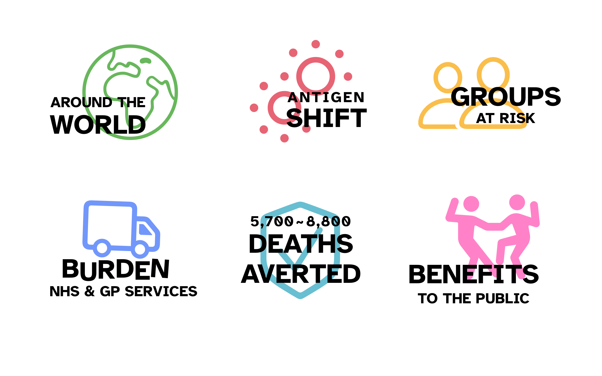
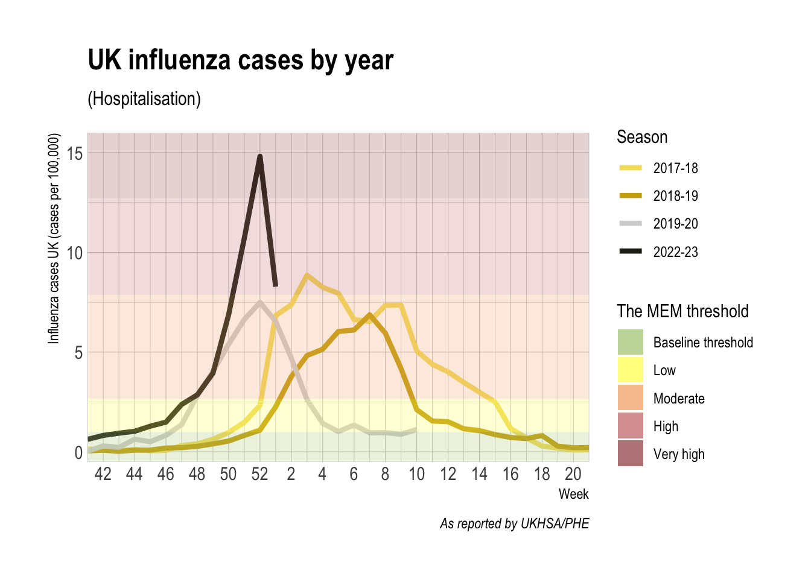

UKHSA report
Introduction
Influenza is a highly infectious and rapidly evolving respiratory virus circulating seasonally around the world (Cope 2018). The World Health Organisation (WHO) estimates that between 290000-650000 deaths occur due to the respiratory virus, not including deaths not due to secondary infections caused by influenza (WHO2022?). Antigenic shifts in the virus may result in uncontrolled extensive spread causing an epidemic (e.g. 1918-2009) (Cope 2018)
Seasonal influenza appear in two types, classified as A and B. A types can are further broken down into subtypes H1N1 and H3N2 (“Types of Influenza Viruses” 2022). Each year, a combination of the A subtypes and B type influenza circulate throughout the population with different proportions. There is some evidence to suggest that H3N2 subtype is more severe than H1N1, leading to higher hospitalisation rates.
Serious progression of the virus may lead to deaths in at risk groups such as children <2 y.o., pregnant women, people >65 y.o. and people with underlying medical conditions, (Zarocostas 2009). In a UK context, seasonal influenza circulation puts a burden on NHS especially hospital beds and GP services (Cope 2018). Having more data to help plan for seasonal peaks can help alleviate pressure on vital services.

Who is UKHSA and why are they interested
UK Health Security Agency (UKHSA) was created as a successor to Public Health England in April 2021 cite. Set up during the height of the COVID-19 pandemic, the UKHSA’s main priority is to tackle national health threats through the use of data analytics and developing vaccines cite.
Understanding the data of how flu is spread can help assist in planning vaccination roll-out. Vaccination is greatly beneficial as it averts between 180,000 and 626,000 cases of influenza per year in England, helping prevent between 5,678 and 8,800 premature deaths (Franklin and Hochlaf 2018). Furthermore, every death averted due to vaccination is estimated to save the NHS £50,610 (Franklin and Hochlaf 2018).
In the UK there are three main ways that influenza is reported: through primary care data, hospitalisation and through swabbing programmes. Having three separate data sources is a valuable to compare whether the peak in the seasonal spread is in the same week or whether any of the data sources lag the others - identifying a possible prediction of a peak in hospitalisations for example. It also may be beneficial to know which strains are in circulation at which and what age group is being affected most. If there is a lag between age groups or strains, hosopitals may be able to prepare better for an oncoming wave of influenza cases.
Research question and hypothesis
We defined our main research question to address the issues descirbed above.
Question: What is the temporal relationship between different influenza data sources (lab-confirmed infections, GP consultations, hospitalisations) in the UK, and have these changed in 2022/23 compared to the pre-pandemic years 2016-2019?
Hypothesis: We suspect that there is a time delay between one source of surveillance and another and the scale of the one that peaks earlier might be predictive of the later ones (GP consultations being greater than hospitalisations for example). Secondly we believe there could be changes in reporting procedures for resp infections post-covid (swabbing increases). As children have more interactions in schools and nurseries, we would expect a larger peak for children before a peak in the older population.
Methods
Time series correlation
– jack correlation method of peaks
Moving Epidemic Method
PHE and the UKHSA use the Moving Epidemic Method (MEM) to describe the severity of the epidemic season. This is calculated using through using previous epidemic activity (Rachovic?).
\(R-0\) calculation
methods for R nought (or effective) can be cited from (Lipsitch et al. 2003) .
Data sources and extraction

Results
To see view the trends in the data and to first explore it, case rate per 100,000 people was ploted against epidemic week. Lines for each season have been represented on of the same plot, each for a different data source.
Source



We expected to see that over different seasons, peaks appear at different weeks. This is due to the complex nature of flu spread, the dynamics do not replicate every season. The size of the peaks however do indicate differing levels of severity in flu each season.
Season


– Jack matrix on correlation –
Log graphs and \(R_0\) value


– \(R_0\) value calculations for seasons
Stratified by Flu strain type
source("../R_scripts/log_graphs.R")
effective_r_values| Effective R values | |||
| Across flu seasons between 2017-18 and 2022-23 | |||
| Flu season | Sources of flu data | ||
|---|---|---|---|
| Primary care | Secondary care | Lab confirmed cases | |
| 2017-18 | 1.275235 | 1.463319 | 1.512406 |
| 2018-19 | 1.139137 | 1.372841 | 1.379396 |
| 2019-20 | 1.234082 | 1.402428 | 1.436438 |
| 2022-23 | 1.231042 | 1.363288 | 1.323094 |
| Note: Data removed for 2021-22 flu season due to effect of Covid-19 pandemic on flu cases | |||